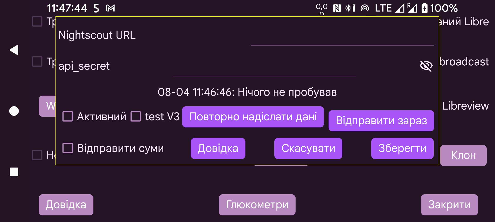

У більшості випадків можна також використовувати вебсервер Juggluco або juggluco-server. Лише кільком програмам, які фактично тільки показують вебсторінку Nightscout, потрібен cgm-remote-monitor. Навіть AAPS і AAPSClient можуть працювати з вебсервером Juggluco 7.4.1.
Усі потокові значення завантажуються на сервер Nightscout одразу після надходження. Якщо використовується кілька датчиків, завантажуються значення кожного з них. Деякі програми, циферблати й віджети Garmin припускають, що значення мають інтервал 5 хвилин. Отримуючи хвилинні значення, вони показують лише останню п’яту частину кривої. Тому вбудований вебсервер Juggluco видає значення з п’ятихвилинним інтервалом, якщо тільки параметр interval=secs не встановлено на менше значення.
URL: URL-адреса має бути у формі https://hostname:port, наприклад, https://myname.herokuapp.com:6789
Активний: увімкнути завантажувач
тест V3: використовувати api/v3 для завантаження до Nightscout. Не використовуйте V3 із сервером Nightscout, який раніше отримував завантаження V1, і не надсилайте V1 на сервер, що раніше отримував V3. Замість api_secret потрібно вказати токен доступу з дозволом завантажувати treatments і entries. Його можна створити у вебінтерфейсі Nightscout у розділі Admin Tools. Параметр названо «тест»,оскільки інших завантажувачів V3 немає. Зазвичай використовується V1.
Надайте суми: також надсилати значення до Nightscout як treatments. Торкання прапорця відкриває діалог, де для кожної мітки можна вказати її значення в Nightscout. Ці параметри спільні з вебсервером Juggluco (ліве меню→Налашт.→Обмін даними→Web server). Прапорець «Надайте суми» можна встановити лише після обробки всіх міток. Якщо згодом додати нову мітку, потрібно не забути вказати, як її передавати. Через помилку в Nightscoutвставки в давніші часові періоди й видалення відображаються лише після додавання елементів із новішим часом. Тому краще надсилати дані до Nightscout рідше. Тепер це робиться щоразу, коли користувач залишає Juggluco — вимикає екран або переходить до іншої програми.
Повторно надіслати дані: знову завантажити всі дані на сервер Nightscout
Відправити зараз: зазвичай дані надсилаються негайно, коли вони надходять від датчика або дзеркала. Натисніть цю кнопку, якщо з якоїсь причини попередня спроба не вдалася.
Версія Juggluco для Wear OS 4.15.0 і новіші також можуть завантажувати значення глюкози до Nightscout. Майже завжди краще надсилати їх через Juggluco на телефоні чи планшеті або через Juggluco Server на комп’ютері. Завантаження витрачає батарею, особливо коли не вдається зв’язатися із сервером Nightscout, тому за відсутності надійного з’єднання краще вимкнути Активний .
Два повідомлення про помилку часто спричиняють плутанину.
Якщо повідомлення має вигляд «upload failure:» і після двокрапки нічого немає, можливі причини:
мережеве з’єднання вимкнено;
ім’я вузла написано неправильно.
upload failure: java.io.FileNotFoundException: NIGHTSCOUTURL/api/v1/entries
Тут NIGHTSCOUTURL — адреса сервера, введена в полі «Nightscout URL».
Причиною є одна з таких помилок:
URL указує на неправильний сайт. Наприклад, після імені вузла немає порту, тому Juggluco підключається до звичайного вебсервера;
api_secret неправильний;
NIGHTSCOUTURL містить зайвий шлях. Наприклад, адреса Nightscout — https://ahost.org:8887 , а введено https://ahost.org:8887/extra.